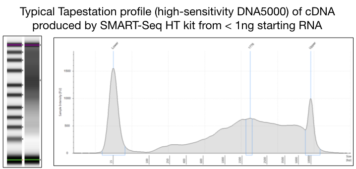

Documentation
Clontech ‘SMART Seq HT’ for High-throughput single-cell mRNA-seq. This is an excellent kit for preparing cDNA very low amounts of RNA (as little as 1-100 cells). This kit is analgous to the well-known Clontech SMART-v4 kit, but is a faster/abbreviated workflow which combines RT/PCR steps and is roughly 30% lower cost compared to SMART-V4.
The protocol below uses the SMART Seq HT kit, however another option for cDNA generation when starting with low-input is the Clontech Pico v2 kit. This has a few important difference from the SMART Seq HT kit above. First, it uses random hexamer priming, rather than polyT, to make cDNA. This means that it works very well when your starting material is highly degraded (e.g. fixed cells or tissues). The random priming also means that this kit amplifies cDNA from all transcripts, including highly abundant RNA molecules such as rRNAs. We tend to use this kit if 1) investigators are working with highly degraded starting material, particularly FFPE tissues, or 2) if they really prefer to study total transcriptomes, rather than mRNAs.
What you’ll need
- 10x Lysis buffer
- RNase inhibitor (40U/ul)
- SeqAmp DNA Polymerase
- One-step Buffer
- SMART-Seq HT Oligonucleotide
- 3’ SMART-Seq CDS Primer II A
- SMARTScribe Reverse Transcriptase (100 U/µl)
- Nuclease-Free Water
- Elution Buffer (10 mM Tris-Cl, pH 8.5)
- Eppendorf LoBind DNA tubes
A few important comments before you start
- Prior to sorting, stain cells in 10% complete media (RPMI with hepes, 10% FCS, Pen/Strep, NEAA, L-glut, Na-Pyruvate, 2ME, etc.)
- You’ll split this protocol into two days: day 1 will be your sort and cell lysis, day 2 will be RNA isolation and/or cDNA generation, and a modified NexteraXT library prep.
- Use only filter pipette tips and clean your area so it is free of RNases.
- Certain steps, such as 1st-strand cDNA synthesis must be carried out in a PCR clean hood
- Be sure to include the kit positive control and a water-only negative control with each experiment.
- the SMART-Seq HT kit uses a 96-well plate for mixing reactions. Do not use tubes.
- Similar to other Clontech low-input kits, SMART-Seq HT uses a template switching method to produce abundant cDNA directly from as few as 1-100 cells or from 10pg-1ng of total RNA.
- This protocol is very sensitive to variations in volume and other factors. Please make sure the pipettes are calibrated and avoid contamination.
Day 1: Sample preparation
OPTION A: sorting into media
-
Always use the 100 uM nozzle on the sorter (rather than 70 uM) and sort at low speed (~5-7K events/sec). This will be more gentle on the cells
-
Sort into Lo-bind 96-well plates to prevent cells from sticking to sides (Lo-bind gives tighter pellets after spin down)
-
Sort into complete media with 50% serum (RPMI with hepes, Pen/Strep, NEAA, L-glut, Na-Pyruvate, 2ME, etc.)
-
Keep everything cold: cells, sort chamber, collection block, collection tubes, etc.
-
Minimize time after sort to lysis. If sorting many samples, spin down in batches – don’t wait until the end if possible.
-
Spin down cells. ~10,000 cells usually produce a visible pellet. Use a pipette tip to carefully draw off supe.
-
lyse cells by adding 300 ul of buffer RLT (from Qiagen RNeasy kit) with 2-ME added fresh. Vortex to lyse cells.
-
Flash freeze tube on dry ice and trasfer to a prechilled box at -80C.
OPTION B: sorting into lysis buffer
-
Prepare 10x reaction buffer from the SMART-Seq HT kit by mixing 19 uL of 10x Lysis Buffer with 1 uL of RNase inhibitor. This is enough for ~20 samples. Scale up as needed, but be sure to maintain 19:1 ratio of lysis buffer to RNase inhibitor
-
Prepare 1x reaction buffer by mixing 9.5 uL nuclease-free water with 1 uL of 10x reaction buffer. This is enough to sort one sample, so be sure to scale up as needed.
-
Add 5ul of 1x reaction buffer to collection eppendorf tube (or one well of a 96-well plate) and sort directly into this tube or well.
-
Immediately after sample is sorted, add an additional 5.5 uL of 1x reaction buffer to tube.
-
Store at -80C until ready to begin cDNA synthesis. You can proceed directly from this cell lysate to cDNA preparation with no intermediate RNA isolation step.
Day 2: cDNA and library prep
RNA extraction
-
If you chose Option A above, extract RNA using the the Qiagen RNeasy micro kit and store at -80C.
-
If you chose Option B above, skip RNA extraction and proceed directly to cDNA synthesis
-
Assess RNA integrity using an Agilent Tapestation 4200 and High-sensitivity RNA screentape. Although tapestation is not ideal for estimating concentration of RNA, it can be used in this case as a rough estimate, since you won’t have enough material to quantify using Qubit.
Clontech SMART-Seq cDNA Synthesis
-
Thaw One-step buffer at room temperature, thaw enzymes (SeqAmp DNA Polymerase and SMARTScribe Reverse Transcriptase) at room temperature then keep tubes on ice once thawed; thaw all other reagents from kit on ice.
-
If you have sample to spare, you can try to measure RNA concentration using Qubit, but it is unlikely to be above the limit of sensitivity (~500 pg/ul). A more practical approach is the use the concentrations provided by High-sensitivity RNA tapestation run. These aren’t ideal, but they’ll have to do.
-
If you have ample RNA, dilute to 0.09 ng/uL. This will allow you to add 10.5ul of RNA to the cDNA reaction, and not exceed 1ng. If you don’t have enough starting material, you can adjust this number following the chart below
-
If you did option B above, then you will use all of your sample lysate as input.
- In your pre-PCR work station, add 10.5 uL of diluted RNA or cell lysate to each well to bring your input to just under 1ng. If using less than 10.5 uL of RNA, add nuclease-free water to qs to 10.5 uL. Keep plate on ice while working with samples.
- Make stock of 10x Reaction Buffer (can be scaled up as needed, we make a stock of this and keep it in our -20C):
| Kit reagent | Volume per rxn (uL) |
|---|---|
| 10x Lysis Buffer | 19 |
| RNase Inhibitor | 1 |
-
To each well containing 10.5uL of diluted RNA, add 1uL of 10x Reaction buffer. Pipette to mix.
-
To each well, add 1 uL of 3’ SMART-Seq CDS Primer II A. Mix gently by pipetting and centrifuge the plate.
-
Before denaturing your samples, prepare a master mix for the cDNA synthesis. Keep this on ice until ready to use.
| Kit reagent | Volume per rxn (uL) |
|---|---|
| Nuclease-free water | 0.7 |
| One-Step buffer | 8.0 |
| SMART-Seq HT Oligonucleotide | 1.0 |
| RNase Inhibitor | 0.5 |
-
Denature your samples by incubating the plate at 72°C in a preheated, hot-lid thermal cycler for 3 minutes.
-
Immediately after the 3 minutes, place the samples on ice for 2 minutes
-
While these samples are on ice, add the enzymes to your master mix from above at the following volumes:
| Kit reagent | Volume per rxn (uL) |
|---|---|
| SeqAmp DNA Polymerase | 0.3 |
| SMARTScribe Reverse Transcriptase | 2 |
-
Immediately after the samples are on ice for 2 minutes, pipette 12.5 uL of the master mix with enzymers into each sample and mix the contents by pipetting gently up and down 15 times. Seal plate and centrifuge.
-
Determine the number of PCR cycles needed based on your original input amount of cells or RNA
| Input of total RNA (or amount of cells) | Typical number of PCR cycles |
|---|---|
| 1 ng (or about 100 cells) | 10-11 |
| 100 pg (or about 10 cells) | 14-15 |
| 10 pg (or about 1 cells) | 17-18 |
- Place samples in a heated-lid thermal cycler, preheated to 42°C and run the following program (bold denotes steps to be run for 10 to 18 cycles, depending on your input size, see the second table for the number of cycles.)
| Temp (C) | Time (min:sec) |
|---|---|
| 42 | 90:00 |
| 95 | 1:00 |
| 98 | 0:10 |
| 65 | 0:30 |
| 68 | 3:00 |
| 72 | 10:00 |
| 4 | hold |
- While the CDNA reaction is running, take the AMPure beads, elution buffer (Clontech kit), and the reagents for the Tapestation, High sensitivity D5000 reagents, ladder, and screentape, out of cold storage to ensure these have equilibrated to room temperature before use.
CDNA clean-up
-
After the plate comes out of the thermal cycler, you have cDNA! Now we will go through a bead based clean-up.
-
Vortex AMPure beads for 2 mins to ensure the beads are mixed well just before use.
-
Add 25 uL of AMPure XP beads directly to PCR products. Mix well by pipetting up and down 20 times.
-
Incubate the bead-cDNA mixture at room temperature for 8 minutes to allow the cDNA to bind to the beads.
-
During the 8 minute incubation, prepare a master mix of 80% ethanol by mixing 100% ethanol with sterile water, you will need 400 uL per sample.
-
Place the samples on the magnetic speration device for ~ 5 minutes or longer, until the liquid appears completely clear and there are no beads left in the supernatant.
-
With the plate still on the magnetic stand, remove the supernatant from your samples without disrupting the beads; you should expect around 45 uL of supernatant. If you accidently pull up some beads with your supernatant, put it back into the well with the bead and mix thoroughly to resuspend the bead, then wait until the liquid is clear again to remove the supernatant.
-
Keep the plate on the magnetic stand and add 180 uL of your 80% ethanol mix to each well. Incubate for 30 seconds, then remove ethanol from well without disrupting the bead and expel.
-
Repeat the step above another time.
-
Let your samples sit for ~ 1 minute then go back into the wells with a P20 to remove any excess ethanol.
-
Incubate samples at room temperature for approximately 2 minutes until pellet is matte. The pellet should not be shiny or that is an indication there is ethanol still in your sample and this will reduce your recovery rate of cDNA. Try to avoid overdrying; if the pellet is cracked it will take a significantly longer time to rehydrate these beads.
-
Once the beads are dry, remove them from the magnetic stand and add 17 uL of Elution Buffer (from the Takara kit in the -20C) to your samples and pipette up and down until the beads are completely rehydrated. You will have to pipette up and down many times until the samples has no visible bead clumps in them.
-
Incubate at room temperature for 2 minutes.
-
Place stand back on the magnetic stand for around 1 minute or longer until the solution is completely clear.
-
Transfer the supernatant into a new 96 well plate.
-
Run the samples through the Agilent TapeStation High Sensitivity D5000 to check that cDNA was made and amplified. Your profile should resemble the one shown below

-
Check the concentration of your samples using Qubit.
-
Store plate at -20C overnight or until proceeding to Day 2 protocol.
Nextera XT Library Prep
- Tagment DNA buffer (TD) (Stored at -20C)
- Amplicon Tagmentation Mix (ATM) (-20C)
- Neutralization buffer (NT) (Room Temperature)
- Nextera PCR Mix (NPM) (-20C)
- Nextera Indexes (i5 and i7) (-20C)
- Resuspension Buffer (RSB) (-20C)
- TruSeq Index Plate Fixture (Room Temperature)
- 80% Ethanol, made fresh the same day
- Magnetic stand
- AMPureXP beads (Beckman-Coulter)
- Illumina Index Replacement Caps
A few important comments before you start
- All work before the PCR step should be performed in the pre-PCR designated hood.
- The i5 and i7 indexes come as Set A, B, C, or D. On the lid of the Nextera reagents in our -20C freezer, there are images of which primers belong to which set. Using indexes from one kit makes programming the run on Basespace before sequencing a lot easier.
Step 1: Quantify DNA
Quantify DNA with a Qubit and then dilute each sample to appropriate concentration. Optimal input per Takara is 100-300 pg of input but no more than 1 ng of input should be used. We have successfully made a final library from up to 800 pg of input.
Step 2: Tagment DNA:
-
Add the following items in the order listed to each well of a new PCR plate. Pipette to mix:
- 10 uL Tagment DNA Buffer (TD)
- 5 uL Normalized gDNA (no more than 1 ng of input)
- 5 μl Amplicon Tagment Mix (ATM)
-
Pipette to mix. Seal the plate. The total volume should be 20 uL per well.
-
Centrifuge the plate at 280 × g at 20°C for 1 minute.
- Place on the preprogrammed thermal cycler and run the tagmentation program.
-
Add 5 μl NT to each well. Pipette to mix. This will stop the reaction.
-
Centrifuge at 280 × g at 20°C for 1 minute.
-
Incubate at room temperature for 5 minutes.
Step 3: PCR
-
Set up the indexes you will be using and arrange them in the TruSeq Index Plate Fixture (see manual for images).
-
Using a multichannel pipette, add 5 μl of each Index 1 (i7) adapter down each column.
- Using a multichannel pipette, add 5 μl of each Index 2 (i5) adapter across each row.
-
Add 15 μl NPM to each well containing index adapters. Pipette to mix. The total volume is now 50 uL per well.
-
Centrifuge at 280 × g at 20°C for 1 minute.
-
Place on the preprogrammed thermal cycler and run the “NexteraPCR” program (bold denotes steps to be run for 12 cycles).
| Temp (C) | Time (min:sec) |
|---|---|
| 72 | 3:00 |
| 95 | 0:30 |
| 95 | 0:10 |
| 55 | 0:30 |
| 72 | 0:30 |
| 72 | 5:00 |
| 10 | hold |
Step 4: Cleanup
-
Vortex AMPure XP beads before each use. Vortex AMPure XP beads frequently to make sure that beads are evenly distributed.
-
Add 30 μl AMPure XP beads to each well.
-
Pipette to mix around 20 times to ensure the beads are mixed well with PCR products.
-
Incubate at room temperature for 5 minutes.
-
Place on a magnetic stand and wait until the liquid is clear (~2 minutes).
-
Remove and discard all supernatant from each well.
- Wash 2 times as follows:
- Add 180 μl fresh 80% EtOH to each well.
- Incubate on the magnetic stand for 30 seconds.
-
Remove and discard all supernatant from each well.
-
Using a 20 μl pipette, remove residual 80% EtOH from each well.
-
Let sit on the magnetic stand until beads are dry, usually less than 5 minutes. When dry, beads will appear matte and cracked.
-
Remove from the magnetic stand when all beads are dry.
-
Add 52.5 μl RSB to each well.
-
Pipette to mix well.
-
Incubate at room temperature for 2 minutes.
-
Place on a magnetic stand and wait until the liquid is clear (~2 minutes).
- Transfer 50 μl supernatant to a new plate.
Step 5: Quality Check
-
Use the HS DNA5000 or HS DNA1000 tape and appropriate reagent buffer. A successful library preparation will have a broad peak with an average size between 400-1000 bp.
-
Quantify the sample with the HS DNA Qubit kit.